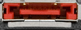
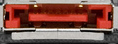
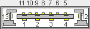

Buses y conectores de datos¶
El bus (o canal) es un sistema digital que transfiere datos entre los componentes de una computadora o entre computadoras. Algunos de estos buses están serigrafiados en la placa base ya que conectan elementos como el microprocesador, el chipset y la memoria RAM.

Ejemplos de buses: FSB, Hyper-Transport (>7 GB/s), Quick Path Interconnect (QPI)(>10 GB/s)
Los principales buses son:
Bus ATA¶
ATA «Advanced Technology Attachmen” permite conectar periféricos de almacenamiento de manera directa con la placa madre mediante un cable de cinta, generalmente compuesto de 40 alambres paralelos y tres conectores. Utiliza un modo de transmisión paralelo
{kind=link}
En el cable, se debe establecer uno de los periféricos como cable maestro y el otro como esclavo. Pondremos un jumper en los dispositvos, esto hará que funcionen como esclavos o maestro

Bus Serial ATA¶
El cable utilizado por el estándar Serial ATA es un cable redondeado que contiene 7 hilos con un conector de 8 mm en su extremo. utiliza un modo de transmisión serie.

Conectores basados en el bus STA con diferente patillaje
- eSATA (External SATA)
 

- eSATA USB hybrid (EUHP)

- SATA Slimline


- Mini-SATA (mSATA)


- SATA micro


- SATA SFF-8784

- SATA Express


- M.2 (NGFF)
- U.2 connector


Conectores SCSI¶
El bus SCSI, Small Computers System Interface, se utiliza habitualmente en los discos duros y los dispositivos de almacenamiento sobre cintas, pero también interconecta una amplia gama de dispositivos, incluyendo escáneres, unidades CD-ROM, grabadoras de CD, y unidades DVD. De hecho, el estándar SCSI entero promueve la independencia de dispositivos, lo que significa que teóricamente cualquier cosa puede ser hecha SCSI (incluso existen impresoras que utilizan SCSI).
SCSI Internal pinout


En el pasado, era muy popular entre todas las clases de ordenadores. Actualmente sigue siendo popular en lugares de trabajo de alto rendimiento, servidores, y periféricos de gama alta. Existen dos anchuras de bus SCSI:
- Estrecho (de 8 bits) permite conectar hasta 8 dispositivos físicos.
- Ancho (de 16 bits) permite conectar hasta 16 dispositivos.
- RJ21 50-pin telco connector

Ranura M.2¶
Sustituye al estándar mSATA, puede llegar hasta una velocidad de transferencia de 3500 MB/s

Ranura U.2¶
El factor de forma U.2 fue desarrollado por el Grupo de trabajo de factor de forma de SSD (SFFWG). La especificación se lanzó el 20 de diciembre de 2011 como un mecanismo para proporcionar conexiones PCI Express a SSD para el mercado empresarial. Las metas incluían la compatibilidad con los discos duros mecánicos existentes de 2.5 «y 3.5», que pueden intercambiarse en caliente y permitir que las unidades SAS y SATA heredadas se mezclen utilizando la misma familia de conectores.

Ranura PCIe¶
Las ranuras PCIe (PCI-Express) nacen en como respuesta a la necesidad de un bus más rápido que los PCI o los AGP (para gráficas en este caso).
- PCIe 1.0 x1: 250MB/s
- PCIe 1.0 x4: 1GB/s (250MB/s x 4)
- PCIe 1.0 x16: 4GB/s (250MB/s x 16)

Serial Attached SCSI¶
Serial Attached SCSI (SAS) es una interfaz de transferencia de datos en serie, sucesor del Small Computer System Interface (SCSI) paralelo, aunque sigue utilizando comandos SCSI para interaccionar con los dispositivos SAS. Aumenta la velocidad y permite la conexión y desconexión de forma rápida.
Tabla de velocidades¶
| BUS | Ancho de banda |
|---|---|
| ATA | 100 MB/s (UltraDMA 5) |
| ATA | 133 MB/s (UltraDMA 6) |
| SATA I | 150 MB/s |
| SATA II | 300 MB/s |
| SATA III | 600 MB/s |
| SATA IV | 1200 MB/s |
| SCSI-2 Extendido | 20 MB/s |
| SCSI-3 (Ultra-5 SCSI) | 640 MB/s |
| SAS-1 | 375 MB/s |
| SAS-2 | 750 MB/s |
| SAS-3 | 1500 MB/s |
| SAS-4 | 2812 MB/s |
| PCIe 1.0 | 250 MB/s |
| PCIe 2.0 | 500 MB/s |
| PCIe 3.0 | 1000 MB/s |
| PCIe 4.0 | 2000 MB/s |
| M.2 | 3500 MB/s |